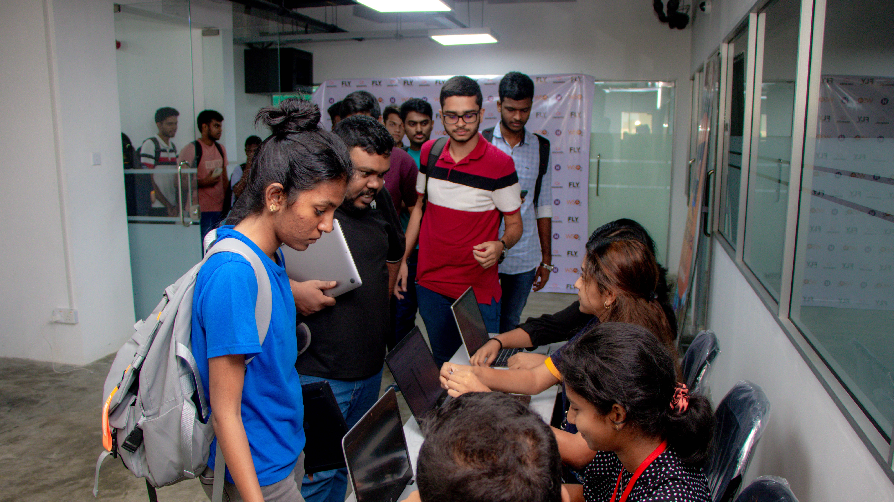
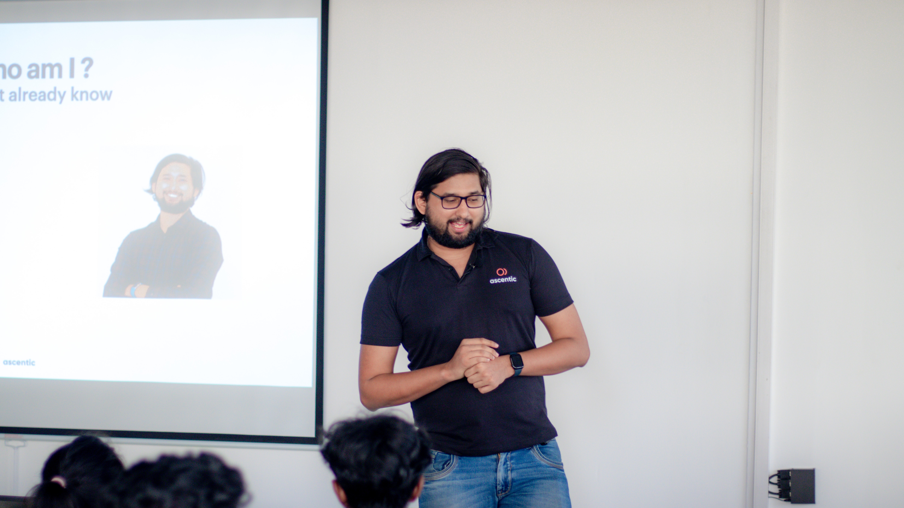
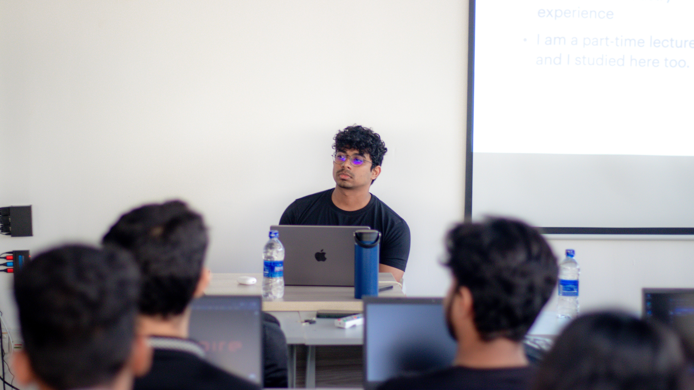
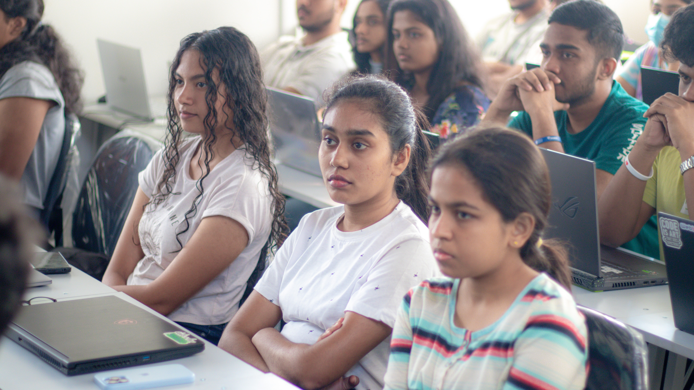
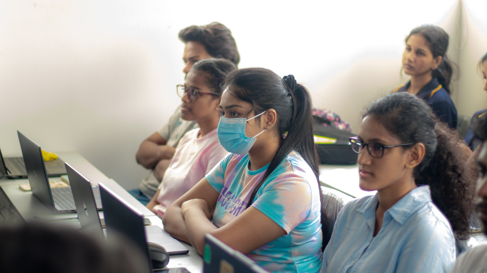
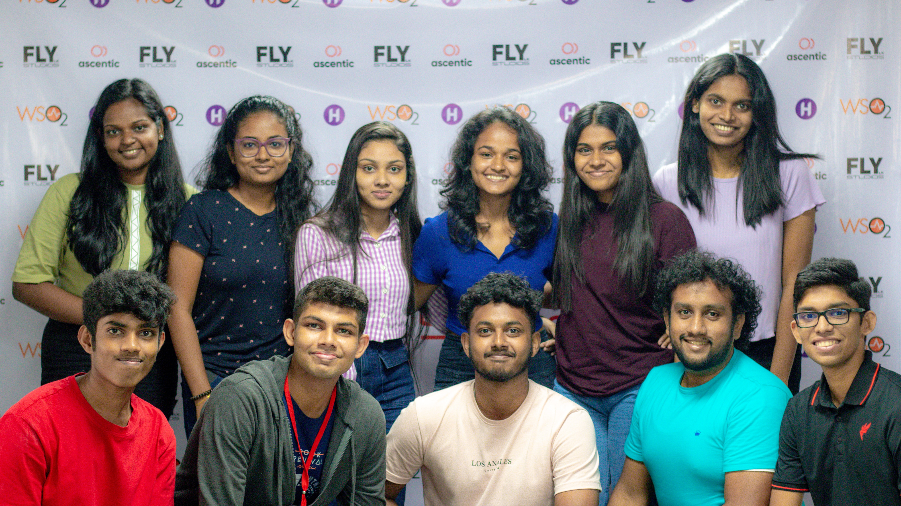
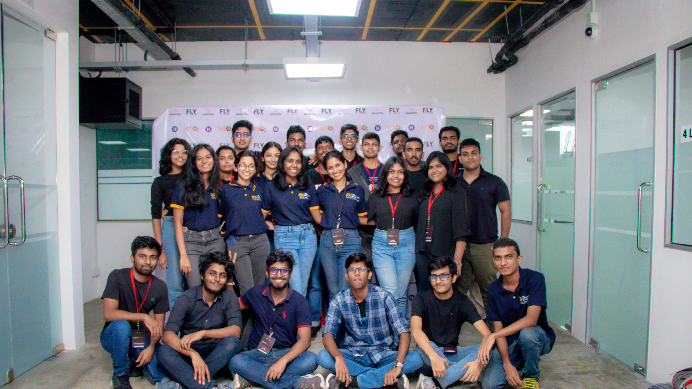
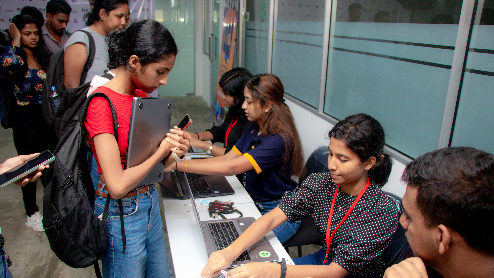

Webspire is an event aimed at empowering undergraduates by connecting them with experienced professionals in the field of web development. The program unfolds in two stages: the first lays a strong foundation in web design and development principles, while the second delivers an immersive, full-day hands-on workshop focused on front-end development with React. In its second stage, WebSpire drew over 250 enthusiastic participants, equipping them with essential skills and practical experience to thrive both academically and in the tech industry.







